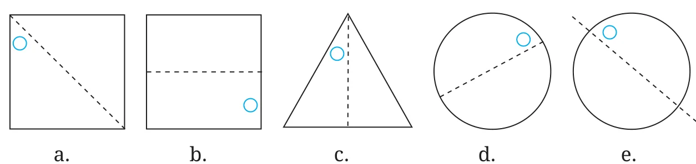
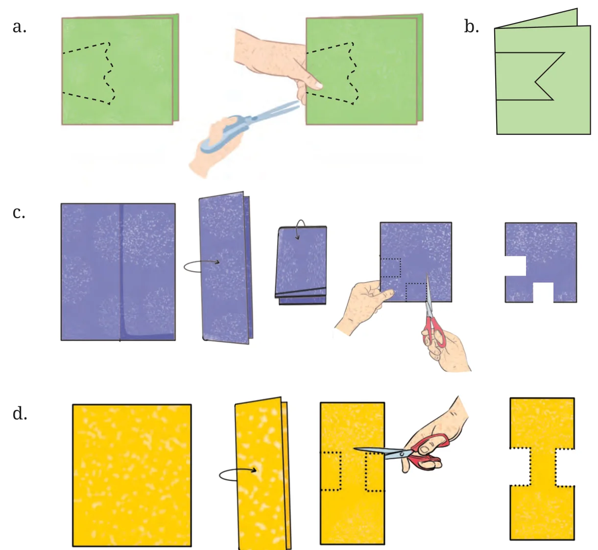
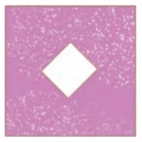
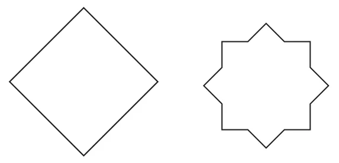

Punching Game
The fold is a line of symmetry. Punch holes at different locations of a folded square sheet of paper using a punching machine and create different symmetric patterns.

- In each of the following figures, a hole was punched in a folded square sheet of paper and then the paper was unfolded. Identify the line along which the paper was folded. Figure (d) was created by punching a single hole. How was the paper folded?

- Given the line(s) of symmetry, find the other hole(s):

- Here are some questions on paper cutting.
Consider a vertical fold. We represent it this way:

Similarly, a horizontal fold is represented as follows:

- After each of the following cuts, predict the shape of the hole when the paper is opened. After you have made your prediction, make the cutouts and verify your answer.

- Suppose you have to get each of these shapes with some folds and a single straight cut. How will you do it?
- The hole in the centre is a square.

- The hole in the centre is a square.

Note: For the above two questions, check if the 4-sided figures in the centre satisfy both the properties of a square.
- The hole in the centre is a square.
- How many lines of symmetry do these shapes have?
-

- A triangle with equal sides and equal angles.

- A hexagon with equal sides and equal angles.

-
- Trace each figure and draw the lines of symmetry, if any:


- Find the lines of symmetry for the kolam below.

- Draw the following.
- A triangle with exactly one line of symmetry.
- A triangle with exactly three lines of symmetry.
- A triangle with no line of symmetry.
Is it possible to draw a triangle with exactly two lines of symmetry?
- Draw the following. In each case, the figure should contain at least one curved boundary.
- A figure with exactly one line of symmetry.
- A figure with exactly two lines of symmetry.
- A figure with exactly four lines of symmetry.
- Copy the following on squared paper. Complete them so that the blue line is a line of symmetry. Problem (a) has been done for you.


Hint: For (c) and (f), see if rotating the book helps!
- Copy the following drawing on squared paper. Complete each one of them so that the resulting figure has the two blue lines as lines of symmetry.


- Copy the following on a dot grid. For each figure draw two more lines to make a shape that has a line of symmetry.